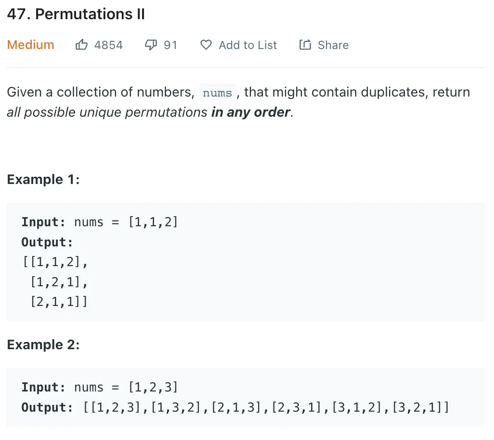
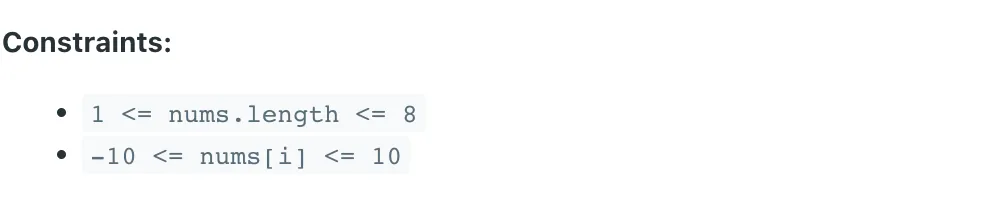

47. Permutations II
考過的公司：Amazon
Question


✍🏽 My Solution
class Solution {
List<List<Integer>> result = new ArrayList<>();
public List<List<Integer>> permuteUnique(int[] nums) {
Arrays.sort(nums);
backtrack(new ArrayList<>(), nums, new boolean[nums.length]);
return result;
}
private void backtrack(List<Integer> path, int [] nums, boolean[] used){
if (path.size() == nums.length) {
result.add(new ArrayList<>(path));
return;
}
for (int i = 0; i < nums.length; i++) {
if (used[i] || i > 0 && nums[i] == nums[i-1] && !used[i-1]) continue;
used[i] = true;
path.add(nums[i]); // 将当前元素加入
backtrack(path, nums, used); // 向后继续添加
used[i] = false;
path.remove(path.size() - 1); // 将 tempList 刚添加的元素，去掉，尝试新的元素
}
}
}
🧠 Thought Process
- Why did I choose this particular implementation?
- 參考題解